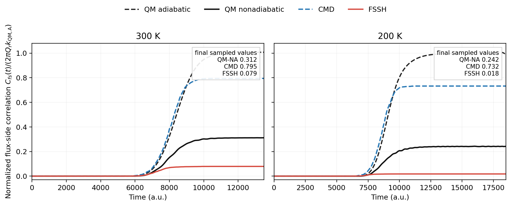

Reaction-Rate Methods
Comparing Trajectory Dynamics with Kubo Flux-Side Correlations
A trajectory ensemble and a quantum Kubo correlation function are not the same microscopic object. They can nevertheless be compared at the level of a common reaction-rate observable. This article makes that comparison algorithmic: it derives the flux-conditioned Boltzmann initial ensemble, shows how CSSH propagates electronic amplitudes, implements accepted and frustrated hops, and restores the thermal rate prefactor removed by rare-event conditioning.
The Quantum Object
Let \(s_1\) be a reactant-side dividing surface and \(s_2\) a product-side surface. The Kubo-transformed flux-side correlation may be written as
where \(\hat h_i=\Theta(\hat x-s_i)\) and \(\hat F_1=(i/\hbar)[\hat H,\hat h_1]\). The flux operator selects thermal amplitude crossing \(s_1\), while the side operator asks how much of that amplitude is on the product side of \(s_2\) at time \(t\). With open scattering boundaries or a sufficiently well-controlled absorbing box, the long-time plateau is proportional to the thermal rate.
The Trajectory Analogue
In a trajectory calculation it is inefficient to draw an unconstrained canonical ensemble and wait for rare reactive events. CSSH instead launches trajectories from the reactant asymptote in a pure lower electronic state, samples a forward ensemble conditioned to clear the lower centroid barrier, and measures the product-side fraction
This is a conditional transmission probability, not an equilibrium population and not yet a rate. The small probability of thermally reaching the barrier has deliberately been removed from the trajectory average. It must be restored through a separately evaluated baseline rate \(k_{\mathrm{base}}\):
For classical adiabatic dynamics, \(k_{\mathrm{base}}\) is the classical transition-state rate. For centroid molecular dynamics it is the CMD transition-state rate computed from the centroid free-energy barrier. For centroid-surface surface hopping, the same CMD prefactor is multiplied by the product fraction of hopping trajectories.
Why the Above-Barrier Energy Is Exponential
The rule \(E=V_c^\ddagger+\xi\) with exponentially distributed \(\xi\) is not an empirical convenience. It follows from sampling positive thermal flux. A canonical momentum density alone is Gaussian, but trajectories crossing a surface are additionally weighted by their velocity \(p/m\):
Under the change of variable \(K=p^2/(2m)\), \(dK=(p/m)dp\), so the positive-flux kinetic energy has the normalized density
Conditioning the total energy on being above the active centroid barrier therefore gives
beta = 1.0 / (kB * temperature)
barrier = centroid_surface.barrier(active_state)[1]
excess = rng.exponential(scale=1.0 / beta, size=ntraj)
total_energy = barrier + excess
start_energy = centroid_surface.energy(x_start, active_state)
p = np.sqrt(2.0 * mass * (total_energy - start_energy))Merely drawing a Maxwell momentum and discarding \(p<0\) would miss the velocity weighting and produce the wrong crossing ensemble. The conditional construction is also a useful rare-event factorization: at 100 K the final thermal rate is of order \(10^{-11}\) a.u., while the conditioned CSSH transmission probability is about \(0.16\). The exponentially rare barrier access is handled by \(k_{\mathrm{CMD}}\), leaving an order-one dynamical probability for Monte Carlo. This is a major variance reduction, but it also fixes the interpretation: the raw \(P_{\mathrm{prod}}\) cannot be compared directly with an unconditional Kubo trace.
Real-time centroid trajectories still do not tunnel through the barrier. Nuclear quantum effects enter through the centroid free-energy barrier and the CMD prefactor. The subsequent surface-hopping trajectories estimate reflection, recrossing, and nonadiabatic transmission conditional on barrier access.
Electronic Propagation, Hops, and Frustrated Hops
CSSH separates the surfaces used by the nuclei from the quantities used by the electronic subsystem. Nuclear forces come from state-specific centroid free-energy surfaces \(V_{c,n}(x)\). Electronic amplitudes are propagated with the physical adiabatic energies and nonadiabatic coupling. In the trajectory-fitted formulation, the momentum of the inactive physical channel is reconstructed at the same total energy,
and a phase-corrected two-state Hamiltonian is built as
arg = p**2 + 2.0 * mass * (energy[active] - energy[inactive])
p_inactive = np.sign(p) * np.sqrt(max(0.0, arg))
H[i, i] = -p * p_channel[i] / mass
H[0, 1] = -1j * (p / mass) * nac[0, 1]
H[1, 0] = -1j * (p / mass) * nac[1, 0]
c = expm(-1j * H * dt) @ cThe local two-state propagator is evaluated at the nuclear midpoint. For active state \(a\) and target \(b\), the fewest-switches trial probability used in the implementation is
coupling = (p_mid / mass) * nac[active, target]
coherence = np.conj(c[active]) * c[target]
g = max(0.0, 2.0 * np.real(coherence * coupling) * dt
/ max(abs(c[active])**2, 1e-15))
attempt_hop = rng.random() < gA trial hop is then judged by energy conservation on the centroid surfaces, because those surfaces generate the nuclear dynamics:
delta_v = Vc(target, x_new) - Vc(active, x_new)
kinetic_after = p_new**2 / (2.0 * mass) - delta_v
if kinetic_after >= 0.0:
p_new = np.sign(p_new) * np.sqrt(2.0 * mass * kinetic_after)
active = target # accepted hop
else:
p_new = -p_new # frustrated hop
# active state is unchangedIn one dimension, reversal is reversal along the nonadiabatic-coupling direction. This is not cosmetic bookkeeping: a frustrated upward hop can turn an otherwise transmitting trajectory back toward reactants. In the \(10^6\)-trajectory 100 K reproduction, 982,089 hops were attempted, none were energetically accepted, and all were frustrated. The successful rate agreement therefore does not mean that upward population transfer occurred; it means that the algorithm reproduced the required nonadiabatic reflection through frustrated-hop reversals. That extreme statistic should be reported explicitly because changing the frustrated-hop rule would change the observable.
From Conditional Transmission to a Thermal Rate
If \(N_{\mathrm{prod}}\) of \(N\) conditioned trajectories reach the product boundary, the CSSH estimator is
For the paper's dimensionless benchmark,
P = transmitted / ntraj
P_se = np.sqrt(P * (1.0 - P) / ntraj)
k_cssh = k_cmd * P
gamma = P / exact_nonadiabatic_to_adiabatic_ratioAt 100 K, \(N=10^6\) gave \(P_{\mathrm{CSSH}}=0.159419\pm0.000339\) from independent trajectory blocks and \(\gamma=0.811147\pm0.001726\), compared with the published values 0.15957 and 0.81. A binomial error is useful for a single endpoint, but production uncertainty should come from independent blocks or seeds so that shared initial conditions, trajectory histories, and saved time points are not mistaken for independent samples.
A Common Dimensionless Scale
The safest operational normalization is the long-time adiabatic quantum plateau:
In the convention used for the present benchmark, \(C_{fs,\mathrm{QM,A}}(\infty)=2\pi Q_r k_{\mathrm{QM,A}}\). The trajectory curve therefore becomes
This formula separates two sources of error. The ratio \(k_{\mathrm{base}}/k_{\mathrm{QM,A}}\) tests the static barrier and thermal statistics. The product fraction tests recrossing, reflection, and nonadiabatic transmission. A trajectory method can obtain one factor correctly while failing on the other.
Why Finite-Box Partition Normalization Fails
A sinc-DVR calculation is usually performed in a finite box, but an open scattering rate is defined per reactant length or incoming flux. Dividing the raw Kubo trace by the canonical partition function of the numerical box introduces an arbitrary dependence on box length. Increasing the empty asymptotic region then changes the reported correlation even though the local scattering physics is unchanged.
The practical cure is to retain the unnormalized Kubo trace, verify convergence with box size and absorbing boundaries, and normalize only by the independently identified adiabatic quantum plateau. The box is then a numerical representation of the continuum rather than part of the physical normalization.
Matched Comparison Workflow
- Match the Hamiltonian. Use the same physical potential, mass, electronic coupling, temperature, and asymptotic energy zero in the quantum and trajectory calculations.
- Match the surfaces. Use the same \(s_1\) and \(s_2\). In the staged Tully benchmark they are \(s_1=-10\) and \(s_2=10\) a.u.
- Converge the quantum reference. Check DVR spacing, box size, time step, absorber, and the stability of the plateau window.
- Define the conditioned trajectory ensemble. For an above-barrier Boltzmann ensemble, sample \(E=V^\ddagger+\xi\) with \(\xi\sim\operatorname{Exp}(\beta)\), choose positive incoming momentum, and propagate from \(s_1\).
- Restore the prefactor. Multiply the product fraction by the classical, CMD, or other baseline rate before comparing it with the Kubo trace.
- Compare more than the endpoint. Inspect arrival time, rise width, recrossing, plateau height, and statistical uncertainty separately.
Staged Tully SAC Benchmark
The example below uses the two-state simple avoided crossing with coupling \(\Delta=0.002\), nuclear mass \(m=2000\), and 1000 trajectories per approximate method. The quantum curves are unnormalized Kubo traces divided by the converged adiabatic quantum plateau. CMD uses a centroid free-energy surface without hops. FSSH uses the physical adiabatic surfaces and phase-corrected electronic propagation. This staged comparison does not include the separate CSSH curve, which would combine centroid-surface nuclear forces with hopping.

| Temperature | Normalized plateau | Calculated | Reference |
|---|---|---|---|
| 300 K | QM nonadiabatic | 0.31029 | 0.311 |
| 300 K | CMD | 0.79442 | 0.793 |
| 300 K | FSSH | \(0.07902\pm0.00337\) | 0.07529 |
| 200 K | QM nonadiabatic | 0.24148 | 0.243 |
| 200 K | CMD | 0.73363 | 0.729 |
| 200 K | FSSH | \(0.01774\pm0.00080\) | 0.01688 |
What Agreement Does and Does Not Mean
Agreement of the long-time plateau is agreement of a thermal rate after the chosen normalization. Agreement of the full rise is stronger evidence that the approximate ensemble also reproduces the arrival-time and recrossing structure of the observable. Neither result proves that a classical or surface-hopping trajectory is a literal realization of a quantum path. The comparison is between estimators of one operator-defined observable, not between microscopic histories.
Statistical interpretation also requires care. At one time point the trajectory product fraction has the binomial estimate
Values at neighboring times are strongly correlated because they come from the same trajectories. A plateau uncertainty should therefore be estimated from independent trajectory blocks or replicates, rather than treating every saved time point as an independent observation.
Algorithm Code
- cssh_rate_algorithm.py is an executable, self-checking implementation of the algorithmic core: positive-flux conditional sampling, trajectory-fitted electronic propagation, fewest-switches trials, accepted/frustrated hop resolution, trajectory termination, and CSSH rate estimation.
- DVR VI: Flux-Side Kubo Correlation gives the underlying DVR operator construction.
- CMD Effective Surfaces for Tully SAC explains the centroid free-energy surfaces used by the trajectory side of the comparison.
References
- Miller, Schwartz, and Tromp, J. Chem. Phys. 79, 4889 (1983).
- Tully, J. Chem. Phys. 93, 1061 (1990).
- Zeng, Li, and Fang, J. Chem. Phys. 163, 224126 (2025), doi:10.1063/5.0286954.